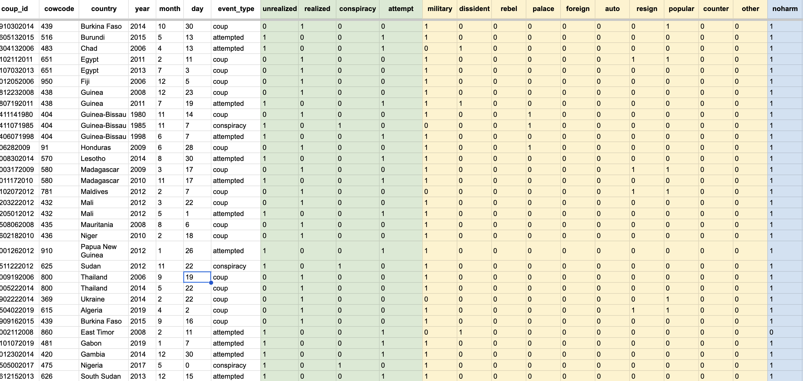
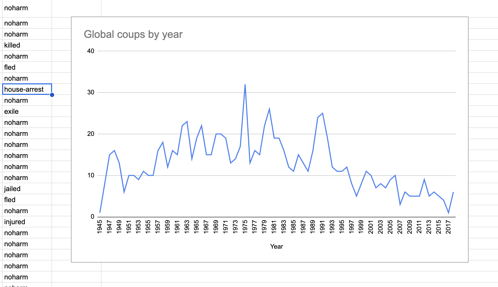
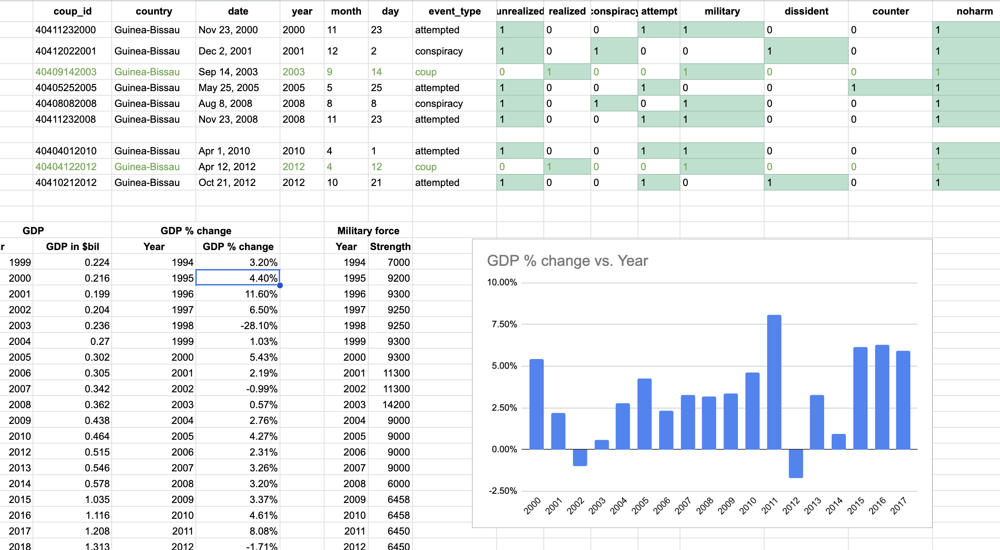

import pandas as pd
import plotly.express as px
coups = pd.read_csv('coups_all.csv')
# coups = pd.read_csv('coups_2000.csv')
Behind-the-Scenes: ‘Guinea-Bissau’s latest coup attempt is only one of 10 since 2000’
Outlining the data collection, analysis, and visualization process for the story Guinea-Bissau’s latest coup attempt is only one of 10 since 2000.
After the assassination attempt on President Umaro Sissoco Embaló in February 2022, I started digging into the history of political unrest in Guinea-Bissau and the impact on its economy.
Data Analysis
I pulled data on attempted coups from the Cline Center for Advanced Social Research’s Coup D’état Database (H/T to Jeremy Singer-Vine’s Data Is Plural newsletter!). The database contains nearly 1,000 coups, each with details such as the date, type of coup, source (military, popular revolt, etc.) and outcome (resigned, arrested, exiled, injured, killed).
A snapshot of the Coup D’état Database
I pulled the dataset into Excel for analysis. It details all coups worldwide from 1945 to 2021, so I grouped all attempted coups by country and year to chart global political instability over time. Some of my initial visualizations included charting the number of coups by year.
Initial explorations
However, because I wanted to zoom in on Guinea-Bisseau, I decided to process the data geographically instead. I switched to a choropleth map to keep the narrative structure consistent with the rest of the story.
I created unique keys for each attempted coup in Guinea-Bissau based on its source and outcome. Once I extracted the rows I needed, I went digging into local news coverage to confirm that these dates mapped to significant political unrest.
Perhaps the most interesting fact I found was that only one elected president in Guinea-Bissau had ever completed a five-year term in office since its independence in 1974. A lot of local coverage talked about the drastic effects of the attempted coups on the economy, so I collected GDP and military spending data from the World Bank.
Contextualizing attempted coups with annual percent change in GDP
Using basic statistics, I converted the GDP numbers to year-over-year percent change. I went in with the hypothesis that both successful coups (in 2003 and 2012) would have led to a drop in GDP — but I found that the 2003 coup led to an increase in the annual percent change in GDP. I’d be curious to see if this is a common outcome of coups welcomed by the public.
Data Visualization
1. Making an interactive choropleth map for global coup data using Plotly
import plotly.graph_objects as go
fig = go.Figure(data=go.Choropleth(
locations = coups['code'],
z = coups['COUNTA of coup_id'],
text = coups['country'],
colorscale = 'plasma',
marker_line_color='gray',
marker_line_width=0.5,
colorbar_title = 'No. of Coups',
))
fig.update_layout(
autosize=True,
height=500, #1000 for actual map
template="plotly_dark",
margin=
{
"r":0,"t":0,"l":0,"b":0,
"pad": 0,
},
title_text="Number of Coups",
title_font_size=14,
title_xanchor="center",
title_x=0.5,
geo=dict(
showframe=False,
projection_type='equirectangular'
),
)
fig.update_layout(
paper_bgcolor='black',
plot_bgcolor='black',
geo_bgcolor='black',
legend_title = dict(font = dict(color = "white")),
dragmode=False,
)
fig.update_traces(
colorbar_orientation="h",
colorbar_thickness=10,
colorbar_yanchor="bottom",
colorbar_title=" ",
colorbar_len=0.6,
selector=dict(type='choropleth')
)
fig.show()2. Scrollytelling in D3.js
// initialize d3 elements
window.createGraphic = function(graphicSelector) {
var graphicEl = d3.select('.graphic')
var graphicVisEl = graphicEl.select('.graphic__vis')
var graphicProseEl = graphicEl.select('.graphic__prose')
var graphicVisImg = graphicVisEl.select('img')
var graphicVisImgWrapper = graphicVisEl.select('.img_wrapper')
var paragraph = document.getElementById("img_text");
// assign actions to each step
var steps = [
function step0() {
graphicVisImgWrapper.style('background', 'url(../assets/img/portfolio/coup/1-kumba-yala.jpg)');
paragraph.textContent = "Kumba Yalá";
},
function step1() {
graphicVisImgWrapper.style('background', 'url(../assets/img/portfolio/coup/2-henrique-rosa.jpg)');
paragraph.textContent = "Henrique Rosa";
},
function step2() {
graphicVisImgWrapper.style('background', 'url(../assets/img/portfolio/coup/3-vieira.jpg)');
paragraph.textContent = "João Bernardo Vieira";
},
function step3() {
graphicVisImgWrapper.style('background', 'url(../assets/img/portfolio/coup/4-sanha.jpg)');
paragraph.textContent = "Malam Bacai Sanhá";
},
function step4() {
graphicVisImgWrapper.style('background', 'url(../assets/img/portfolio/coup/5-manuel.jpg)');
paragraph.textContent = "Manuel Serifo Nhamadjo";
},
]
// update chart
function update(step) {
steps[step].call()
}
update(0);
return {
update: update,
}
}
// handle the fixed/static position of the graphic
$(document).ready(function() {
function waypoints() {
var graphicEl = document.querySelector('.graphic');
var graphicVisEl = graphicEl.querySelector('.graphic__vis');
var triggerEls = selectionToArray(graphicEl.querySelectorAll('.trigger'));
var viewportHeight = window.innerHeight;
var halfViewportHeight = Math.floor(viewportHeight / 2);
// a global function creates and handles all the vis + updates
var graphic = createGraphic('.graphic');
var toggle = function(fixed, bottom) {
if (fixed) {
graphicVisEl.classList.add('is-fixed');
}
else {
graphicVisEl.classList.remove('is-fixed');
}
if (bottom) {
graphicVisEl.classList.add('is-bottom');
}
else {
graphicVisEl.classList.remove('is-bottom');
}
}
// set up a waypoint trigger for each trigger element
var waypoints = triggerEls.map(function(el) {
// get the step, cast as number
var step = +el.getAttribute('data-step');
return new Waypoint({
element: el, // our trigger element
handler: function(direction) {
// if the direction is down then we use that number,
// else, we want to trigger the previous one
var nextStep = direction === 'down' ? step : Math.max(0, step - 1);
// tell our graphic to update with a specific step
graphic.update(nextStep);
},
offset: '50%', // trigger halfway up the viewport
});
});
// enter (top) / exit (bottom) graphic (toggle fixed position)
var enterWaypoint = new Waypoint({
element: graphicEl,
handler: function(direction) {
var fixed = direction === 'down';
var bottom = false;
toggle(fixed, bottom);
},
});
var exitWaypoint = new Waypoint({
element: graphicEl,
handler: function(direction) {
var fixed = direction === 'up';
var bottom = !fixed;
toggle(fixed, bottom);
},
offset: 'bottom-in-view',
});
}
waypoints();
});3. Plotting year-on-year percentage change in GDP as a bar chart
import pandas as pd
import plotly.express as px
gdp = pd.read_csv('gdp.csv')
gdp['GDPchange'] = gdp.apply(lambda x: x['GDPchange'][:-1] , axis=1)
gdp['GDPchange'] = gdp['GDPchange'].str[:-1].astype(float)
gdp.head()| Year | GDPchange | |
|---|---|---|
| 0 | 1994 | 3.2 |
| 1 | 1995 | 4.4 |
| 2 | 1996 | 11.6 |
| 3 | 1997 | 6.5 |
| 4 | 1998 | -28.1 |
gdp['GDPchange'].dtypedtype('float64')import plotly.graph_objects as go
fig = px.bar(gdp, x='Year', y='GDPchange',
template="plotly_dark")
config = {
'displayModeBar': False,
'showAxisDragHandles': True,
'showAxisRangeEntryBoxes' : False,
'editable': False,
'doubleClick': False
}
fig.update_xaxes(fixedrange=True)
fig.update_yaxes(fixedrange=True)
fig.update_traces(marker_line_color='rgb(8,48,107)',
marker_line_width=1, opacity=0.6)
fig.show(config=config)I made the final bar chart from a CSV in JavaScript using the Chart.js library for better responsiveness and interactivity.
$(document).ready(function() {
"use strict";
$.ajax({
type: "GET",
url: "../chart-data/sanitised-gdp.csv",
dataType: "text",
success: function(data) {processGDP(data);}
});
});
function processGDP(csvdata) {
"use strict";
var data_array = $.csv.toArrays(csvdata);
data_array.splice(0, 1);
console.log(data_array);
const arrayColumn = (arr, n) => arr.map(x => x[n]);
const years = arrayColumn(data_array, 1);
const gdps = arrayColumn(data_array, 2);
years[3] = [years[3], " test"];
console.log(years);
const data = {
labels: ['2001','2002',['2003','First Coup'],'2004','2005','2006','2007','2008','2009', '2010','2011',['2012','Second Coup'],'2013'],
datasets: [{
label: 'GDP % Change',
data: gdps,
backgroundColor: 'rgba(54, 162, 235, 0.2)',
borderColor: 'rgb(54, 162, 235)',
borderWidth: 1,
}],
};
var ctx = document.getElementById('gdp-barchart').getContext('2d');
var myChart = new Chart(ctx, {
type: 'bar',
data: data,
options: {
responsive: true,
scales: {
x: {
ticks: {
color: '#fff',
}
},
y: {
beginAtZero: true,
ticks: {
color: '#fff'
},
}
},
plugins: {
legend: {
display: false,
},
tooltip: {
usePointStyle: true,
backgroundColor: 'gray'
}
},
},
});
}Future work
In December 2023, Embaló dissolved parliament citing allegations of an attempted coup d’état. I’m interested in continuing this story during the next presidential elections scheduled for November 2025.